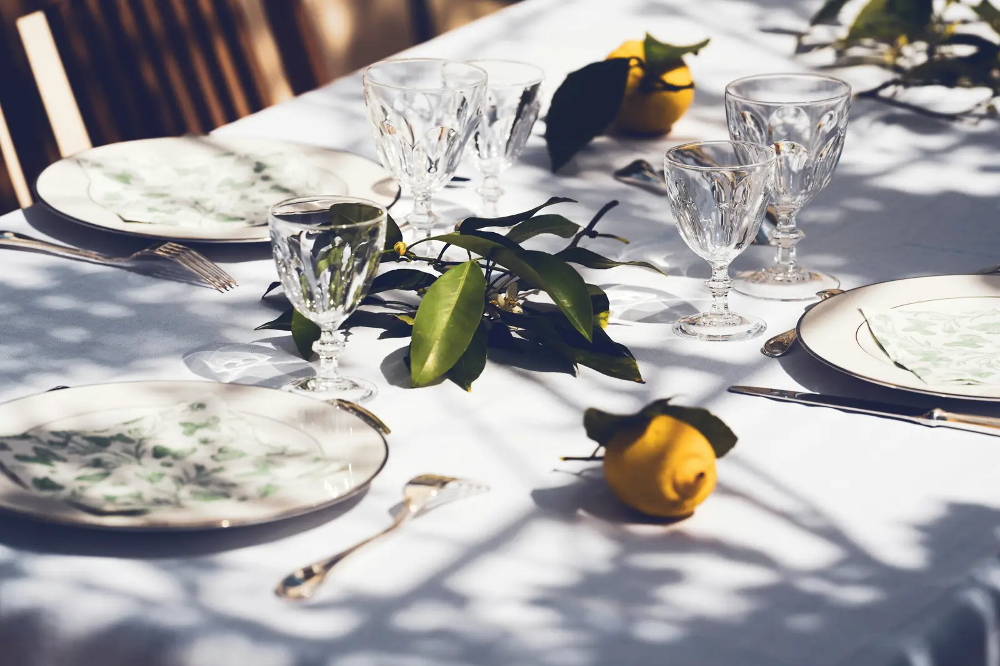
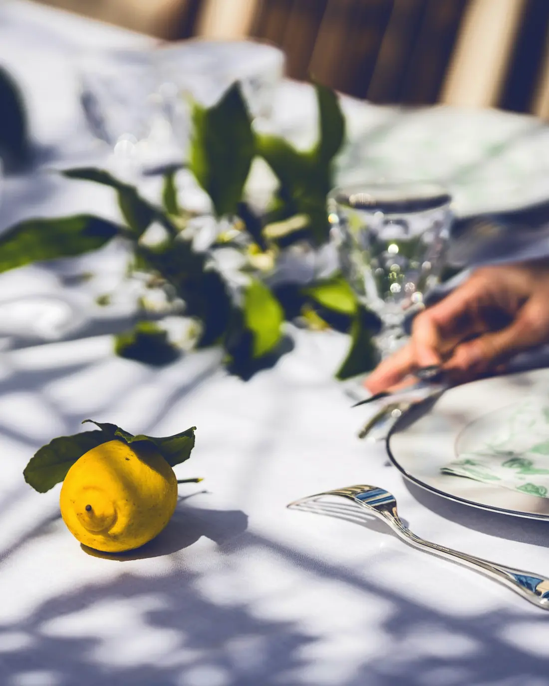
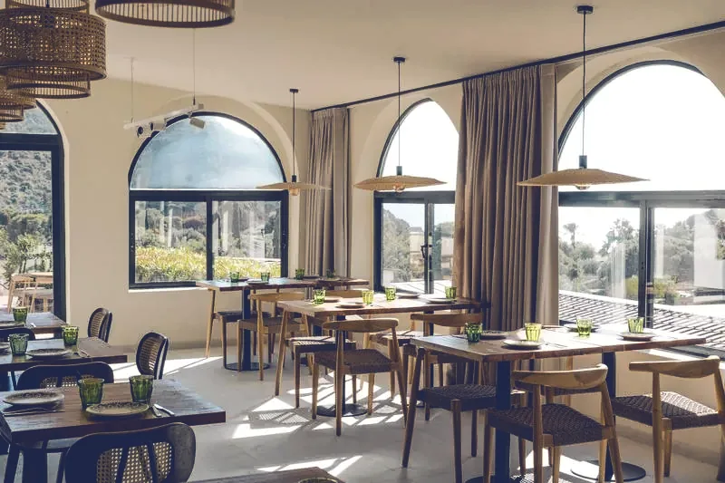
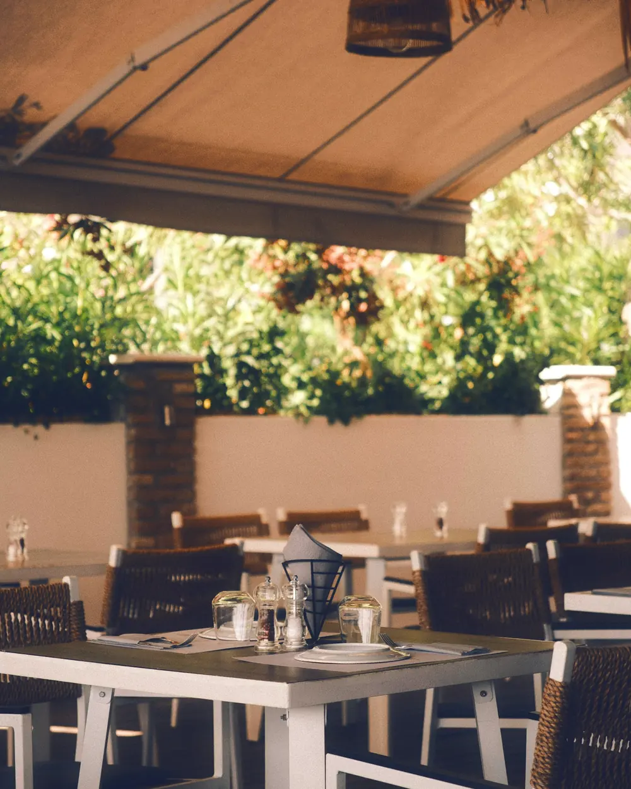
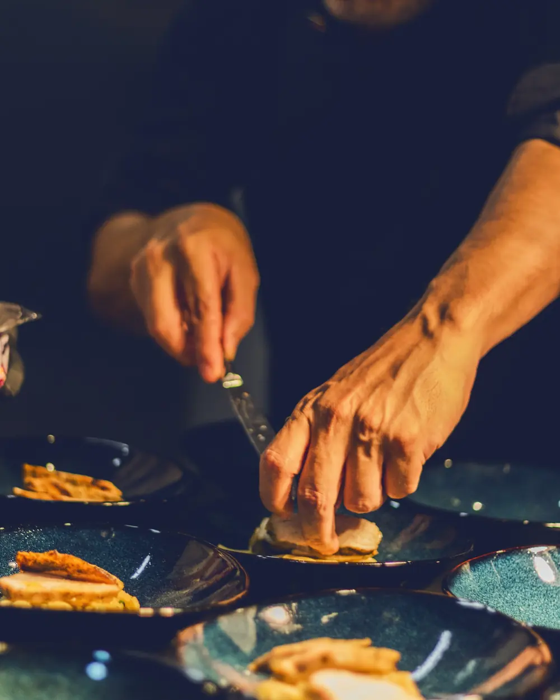
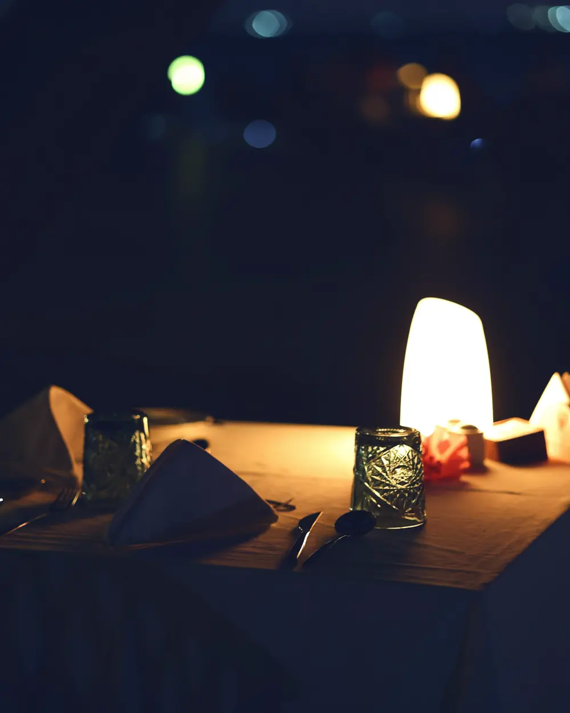
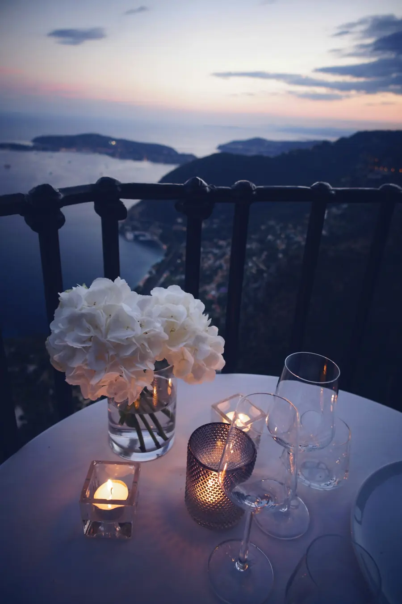

Maison Olive
Cuisine méditerranéenne de saison, midi et soir, à l’ombre de la canisse.
Réserver une table
Démonstration : aucune réservation n’est envoyée et aucune donnée n’est collectée.
Le marché le matin, le feu de bois à midi, l’huile d’olive sur chaque assiette.

Maison Olive est une table du Sud, courte et précise. Ce que les maraîchers et les pêcheurs apportent le matin décide de ce que l’on sert le soir.
On y vient pour un déjeuner sous la canisse ou pour un long dîner quand la chaleur tombe. La cuisine prend son temps, le service aussi.
Découvrir le menu du marchéLa carte
Midi
Déjeuner du marché, du mardi au vendredi : entrée, plat et dessert du jour, 42 €.
Pour commencer
Burrata, tomates rôties
18 €Basilic, huile nouvelle. végétarien
Bouillon de roche
16 €Légumes croquants, rouille légère.
Panisses, aïoli au citron
12 €Farine de pois chiches, frites dorées à l’huile d’olive. végétarien
Plats
Linguine vertes, palourdes
28 €Pâtes au basilic, vin blanc, persil plat.
Risotto aux coquillages
32 €Moules, palourdes, gambas, safran.
Légumes du jardin rôtis
24 €Semoule aux herbes, yaourt au citron. végétarien
Pour finir
Tarte au citron meringuée
14 €Crème de citron, meringue brûlée, sablé au thym. végétarien
Figues rôties
13 €Miel de lavande, amandes grillées. végétarien
Soir
Le soir, la carte ou le menu du marché en cinq temps, 68 €.
Pour commencer
Crudo de daurade
21 €Agrumes, fenouil, huile au citron.
Fleurs de courgette farcies
19 €Ricotta, menthe, coulis de tomate. végétarien
Burrata, tomates rôties
18 €Basilic, huile nouvelle. végétarien
Plats
Poulpe grillé
34 €Feu de bois, roquette, citron, pommes de terre écrasées.
Poisson du jour
36 €Selon la pêche, fenouil braisé, beurre blanc au safran.
Épaule d’agneau confite
38 €Sept heures au four, pois chiches, jus aux herbes.
Pour finir
Tarte au citron meringuée
14 €Crème de citron, meringue brûlée, sablé au thym. végétarien
Chocolat noir, huile d’olive
14 €Ganache tiède, fleur de sel, pain grillé. végétarien
Carte d’exemple : plats et prix illustrent la démonstration. Allergènes détaillés sur demande.
Le lieu
Une salle aux fenêtres en arc, une terrasse sous la canisse, une cuisine qui se laisse voir. Ouvrez les volets.
-

-

-

-

Infos pratiques
Maison Olive 12, place du Marché Adresse d’exemple- Face au marché couvert, stationnement sur la place.
- Dernière commande 30 minutes avant la fermeture.
- Salle de plain-pied et toilettes accessibles.
| Jour | Midi | Soir |
|---|---|---|
| Lundi | Fermé | |
| Mardi au vendredi | 12 h – 14 h 30 | 19 h 30 – 22 h 30 |
| Samedi | 12 h – 15 h | 19 h 30 – 23 h |
| Dimanche | 12 h – 15 h | Fermé |
Proposez-vous des plats végétariens ?
Toujours au moins un par moment du repas, signalés sur la carte. Le menu du marché existe aussi en version végétarienne.
Et pour les allergies ?
Signalez-les en arrivant. L’équipe détaille la composition de chaque assiette et adapte ce qui peut l’être.
Peut-on venir à plus de huit ?
Avec plaisir. Pour un anniversaire ou un repas de famille, la cuisine prépare un menu à partager et la terrasse peut être réservée en entier, quelques jours à l’avance.
Les chiens sont-ils acceptés ?
Oui, en terrasse. Une gamelle d’eau les attend à l’entrée.

À ce soir ?
Les bougies s’allument, la mer passe au bleu d’ombre et une table vous attend.
Réserver une tableUn site à la hauteur de votre table.
Maison Olive est une démonstration imaginée par Studio Web : une identité, des photos étalonnées, une carte facile à mettre à jour et un parcours de réservation prêt à être relié à votre outil.